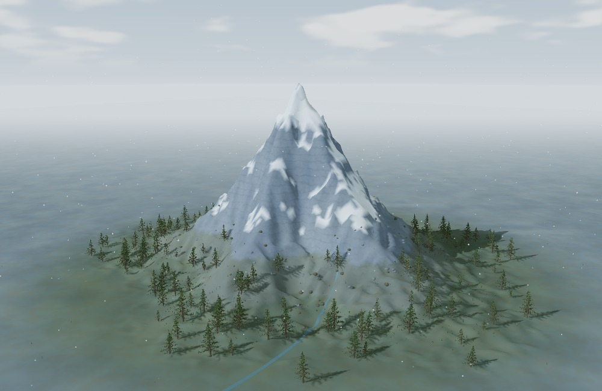
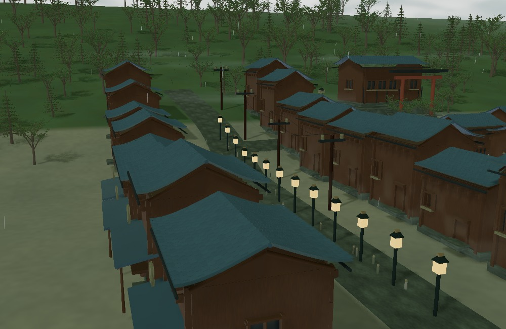
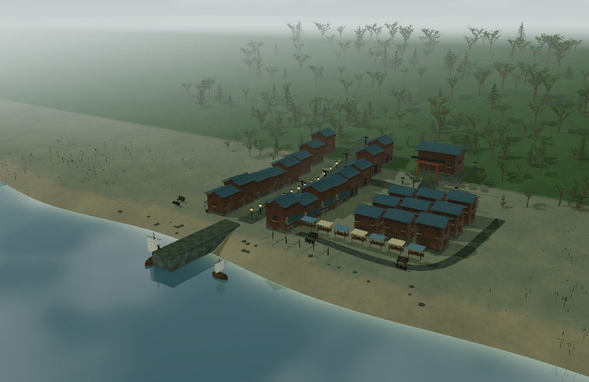
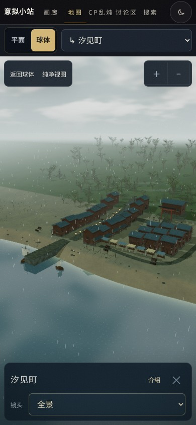
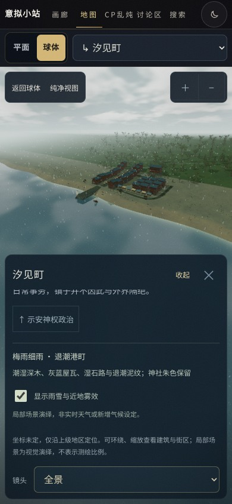

PIERTEIA / ENVIRONMENT STUDIES 17
各地有各地的天气、地表与材质
下面是本轮实际 WebGL 渲染，不是概念生成图。八个现有场景分别设置天空、光照、能见度、水面与表面风化。正式海陆、地点坐标与隶属关系没有改变。
具体取景天气和局部植被、溪流均属于视觉演绎，并非实时天气或新的正式气候设定。学院布局、群岛裂隙与原有画质保留；这里也不宣称全世界美术已经完成。
打开地图，切换并进入场景 ↗高原风雪 · 冷岩与积雪
天神峰
局部山脊、坡面雪层与碎石分开表现，草本留在低处；源区溪流为局部视觉演绎，不新增正式地图河道。
在线进入此场景 ↗
全景 · 1000 × 650 · 实际场景导出，未叠加界面梅雨细雨 · 退潮港町
汐见町
灰蓝屋瓦、深木与湿石路。低潮水面与船体一起调整；雨丝和水面细纹随开关关闭，建筑保持雨后湿感。
在线进入此场景 ↗ 全景 · 1000 × 650 · 实际场景导出，未叠加界面
全景 · 1000 × 650 · 实际场景导出，未叠加界面
建筑近景 · 同一场景，不另换概念素材WEATHER CONTROL
天气叠加可以关闭
开关控制雨雪、近地雾，以及汐见町的雨点水纹；不会把整个雨季场景强行改成晴天。系统偏好“减少动态”时关闭这些叠加。

关闭叠加：保留阴天、湿石路和退潮地貌开启叠加：雨丝、水面细纹与近地雾MOBILE / 390 × 844
不把天气说明常驻盖在画面上
新说明和开关放在可折叠介绍里。正文内部滚动，返回、收起与镜头选择仍可用。这里是 Chromium 触屏／视口模拟，不是实机 Safari。

默认紧凑卡片
展开后可访问天气开关